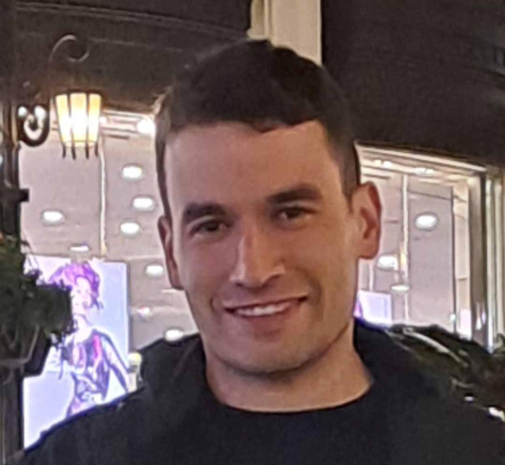
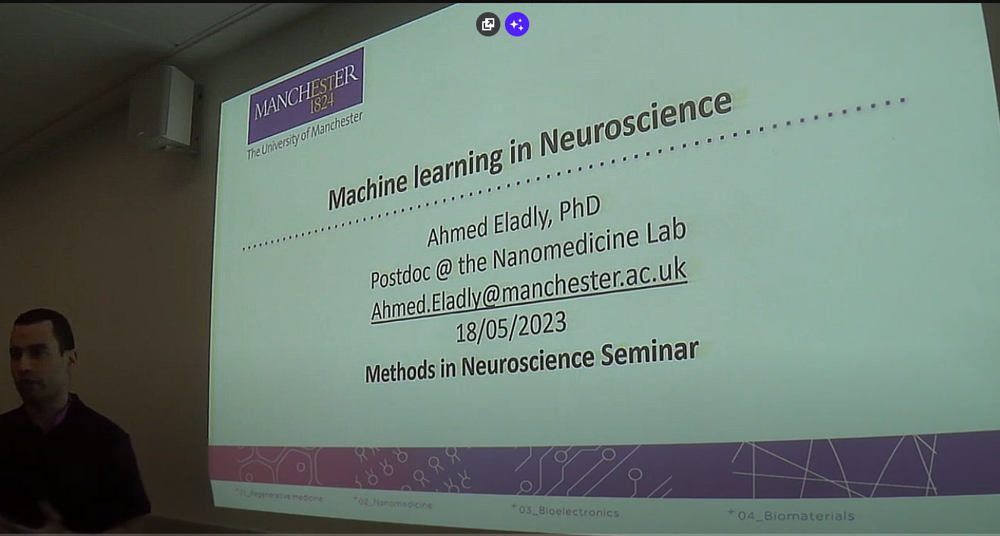

Welcome to my webpage!
My name is Ahmed Eladly. I am a neuroengineer with expertise in neural stimulation, small animal surgeries, and advanced statistical analysis of neural data.
I did my PhD in information and communication technologies under the tutelage of Prof. Antoni Ivorra in the Biomedical Electronics Research Group BERG at the Universitat Pompeu Fabra in Barcelona, Spain.
Prior to this I obtained my Masters in bioengineering degree from the University College Dublin. I was trained at the Surface Engineering Lab led by Prof. Denis Dowling.
I am a research scientist at the Vestibular Neuroscience Lab headed by Prof. Larry Hoffman at UCLA, where I am researching sensory information processing in the vestibular system using animal and computational modeling.
Before this, I held a postdoc position at the University of Manchester where I used computational analysis methods and animal models to validate a closed-loop deep brain stimulatior for neuromodulation applications in collaboration
with a Spanish BCI start-up called INBRAIN Neuroelectronics.
My research interests include:
1- Sensorimotor processing
2- Computational and biological learning
3- Brain computer interfaces
4- Advanced probabilistic machine learning methods for neural data analysis and modeling.
5- NeuroAI
### Skills
1- Neurostimulation and recording in awake and anesthetized animals
2- Behavioral animal testing
3- Deep learning frameworks (BNN,CNN,RNN,VAE,GANs,RL,SNN) for modeling and decoding of
neural signals (Tensorflow-Keras, Pytorch)
4- Probabilistic machine learning (TFP,JAX, Pyro, pymc, scikit-learn) .
5- Computational and biological Inferencing (Monte Carlo Markov Chains, variational, normalized flow).
### Academic Genealogy
My academic tree dates back to as far as 1943:
>José García Santesmases (physics school/department, Universidad Complutense de Madrid, 1943)
> Antonio Vaquero Sanchez (physics school/department Universidad Complutense de Madrid, year unknown)
> Jordi Aguiló Llobet (UAB, year unknown)
> Antoni Ivorra Cano (UPC, 2005)
> Ahmed Eladly (UPF, 2021)
### Research Highlights
- **Interleaved intramuscular stimulation with minimally overlapping electrodes evokes smooth and fatigue resistant forces.**
[2020 J. Neural Eng Aug 25;17(4):046037.]( https://doi.org/10.1088/1741-2552/aba99e)
A. Eladly, J. Del Valle, J. Minguillon, B. Mercadal, L. Becerra-Fajardo, X. Navarro, A. Ivorra
- **Charge and topography patterned lithium niobate provides physical cues to fluidically isolated
cortical axons**
[ Applied Physics Letters, vol. 110, no. 5, p. 053702, 2017
](https://doi.org/10.1063/1.4975304)
D. Kilinc, A. Blasiak, M. Baghban, N. Carville, A. Al-Adli, R. Al-Shammari, J. Rice, G. Lee, K. Gallo and
B. Rodriguez
### Under preparation
- **Novel mechanically-flexible, graphene-based, 8-channel, microelectrodes for simultaneous recording and
electrical stimulation of deep brain microstructures**
A. Eladly, N. Ria, E. Masvidal-Codina, X. Illa, A. Guimerà-Brunet, J.A Garrido , K. Kostarelos , R.C. Wykes,
- **Mapping the continuum of Spreading Depolarisation induced haemodynamic responses in the post-stroke brain using
graphene micro-transistor arrays and blood flow imaging**
S. M. Flaherty, A. Eladly, K. Hills, J. Merlini, E. Masvidal-Codina,
E. Fernandes, X. Illa, E. Prats-Alfonso, J.
Meents, C. Jeschke, K. Kostarelos, S. M. Allan, J. A. Garrido, A. Guimerà-Brunet, R.C. Wykes
br />
### Videos
